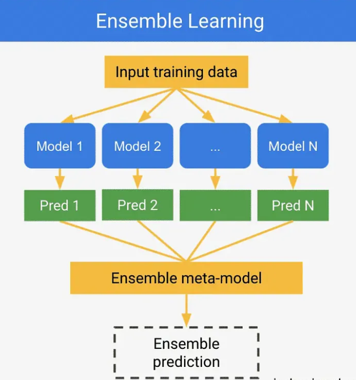
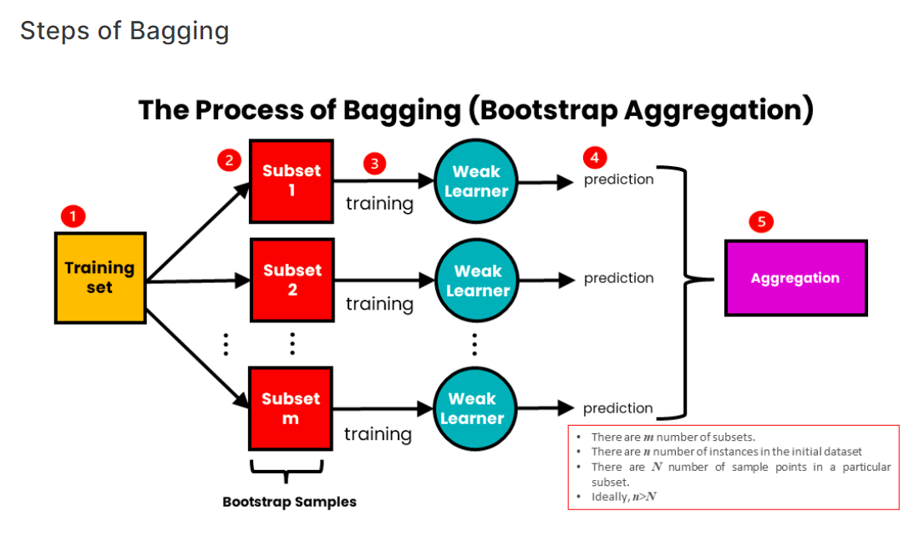

~ Model Klasifikasi Data “𝓗𝓮𝓪𝓻𝓽 𝓕𝓪𝓲𝓵𝓾𝓻𝓮 𝓒𝓵𝓲𝓷𝓲𝓬𝓪𝓵 𝓡𝓮𝓬𝓸𝓻𝓭𝓼” ~#
A. Analisis Untuk Memprediksi Kematian Akibat Gagal Jantung.#
Link Untuk Aplikasi Klasifikasi Gaussian Naive Bayes : https://tandonsky.pythonanywhere.com/
Referensi : https://www.kaggle.com/code/baktisiregar/klasifikasi-supervised-learning/notebook
1. Latar Belakang dan Tujuan#
Penyakit kardiovaskular adalah penyebab utama kematian secara global, merenggut sekitar 17,9 juta jiwa setiap tahun, yang merupakan 31% dari seluruh kematian di dunia. Gagal jantung adalah salah satu kondisi umum yang diakibatkan oleh penyakit kardiovaskular dan seringkali memiliki dampak yang sangat signifikan pada kualitas hidup penderita. Kumpulan data ini mencakup 12 fitur yang bisa digunakan untuk memprediksi kematian akibat gagal jantung. Dengan menganalisis data ini, kita dapat mengidentifikasi pola dan faktor risiko utama yang berkontribusi pada tingginya angka kematian akibat gagal jantung, sehingga memungkinkan intervensi medis yang lebih tepat sasaran dan efektif untuk mengurangi beban penyakit ini di masa depan.
Sebagian besar penyakit kardiovaskular dapat dicegah dengan mengelola faktor risiko perilaku seperti merokok, pola makan yang tidak sehat, obesitas, kurangnya aktivitas fisik, dan konsumsi alkohol berlebih melalui strategi populasi. Orang dengan penyakit kardiovaskular atau yang berisiko tinggi (seperti hipertensi, diabetes, hiperlipidemia, atau kondisi kesehatan lainnya) dapat mengambil langkah-langkah pencegahan untuk mengurangi risiko mereka. Pemahaman mendalam tentang faktor-faktor yang mempengaruhi gagal jantung sangat penting untuk pengembangan strategi pencegahan dan pengobatan yang lebih baik. Analisis data dari kumpulan fitur ini dapat membantu dalam menciptakan model prediktif yang akurat untuk menilai risiko kematian pada pasien gagal jantung, serta merancang program perawatan yang dipersonalisasi dan efektif untuk meningkatkan kualitas hidup pasien serta mengurangi beban ekonomi dan sosial yang ditimbulkan oleh penyakit kardiovaskular.
1.1 Deskripsi Data#
Dataset dari Davide Chicco, Giuseppe Jurman memiliki 12 fitur dan 1 class target, yakni :
Age: usia pasien (dalam tahun)
Anemia: Penurunan sel darah merah atau hemoglobin
High blood pressure: Jika pasien menderita hipertensi
Creatinine phosphokinase: Tingkat enzim CPK dalam darah (mcg/L)
Diabetes: Jika pasien menderita diabetes
Ejection fraction: Persentase darah yang meninggalkan jantung pada setiap kontraksi
Sex: Wanita atau pria
Platelets: Trombosit dalam darah (kiloplatelet/mL)
Serum creatinine: Tingkat kreatinin dalam darah (mg/dL)
Serum sodium: Tingkat natrium dalam darah (mEq/L)
Smoking: Jika pasien merokok
Time:: Periode tindak lanjut (dalam hari)
(target) death event: Jika pasien meninggal selama masa tindak lanjut
1.2 Deskripsi Masalah#
Membuat model untuk memprediksi kemungkinan pasien meninggal karena gagal jantung.
Ini adalah masalah klasifikasi biner karena kelas target (Kematian) terdiri dari dua kelas Benar atau Salah
B. Memahami Data Heart Failure Clinical Records#
2. Apa Itu Data?#
Data adalah sekumpulan fakta atau informasi yang dapat digunakan untuk berbagai tujuan. Data bisa berbentuk angka, teks, gambar, suara, dan lain sebagainya. Dalam konteks teknologi dan ilmu pengetahuan, data sering digunakan untuk analisis, pengambilan keputusan, dan pengembangan aplikasi atau sistem.
Berikut adalah beberapa jenis data:
Data Kuantitatif : Data yang berupa angka dan dapat diukur, seperti tinggi badan, berat badan, suhu, atau jumlah barang.
Data Kualitatif : Data yang berbentuk deskripsi atau kategori, seperti warna, jenis kelamin, atau nama.
Data Terstruktur : Data yang terorganisir dalam format tertentu seperti tabel dalam basis data, yang memudahkan pengolahan dan analisis.
Data Tidak Terstruktur : Data yang tidak memiliki format tertentu, seperti teks dari artikel, foto, atau video.
Data Waktu Nyata (Real-Time) : Data yang diperoleh dan dianalisis saat kejadian berlangsung, seperti data dari sensor di mesin pabrik.
Lalu untuk Pemahaman data (data understanding) adalah tahap awal dalam proses analisis data atau proyek pembelajaran mesin yang bertujuan untuk memahami data yang akan digunakan. Tahap ini melibatkan beberapa langkah penting untuk memastikan bahwa data yang tersedia dapat digunakan secara efektif untuk mencapai tujuan analisis atau model. Berikut adalah beberapa elemen kunci dalam pemahaman data:
Pengumpulan Data : Mengumpulkan data dari berbagai sumber yang relevan dengan masalah yang ingin dipecahkan.
Deskripsi Data : Menyediakan deskripsi umum tentang data, termasuk ukuran dataset, tipe data, dan struktur data. Ini mencakup pembuatan ringkasan statistik dasar seperti rata-rata, median, modus, standar deviasi, dan distribusi data.
Eksplorasi Data : Menganalisis data secara lebih mendalam untuk menemukan pola, tren, anomali, atau hubungan antara variabel. Ini sering melibatkan visualisasi data menggunakan grafik dan plot.
Kualitas Data : Menilai kualitas data dengan memeriksa keberadaan nilai yang hilang, data yang duplikat, atau data yang tidak konsisten. Ini juga termasuk identifikasi dan penanganan outlier.
Transformasi Data : Melakukan pembersihan dan transformasi data jika diperlukan, seperti menangani data yang hilang, mengubah format data, atau menggabungkan beberapa sumber data.
Pahami Konteks Bisnis : Menghubungkan data dengan konteks bisnis atau domain masalah untuk memastikan relevansi dan memastikan bahwa analisis atau model yang dikembangkan akan bermanfaat dan sesuai dengan tujuan bisnis.
Dokumentasi : Mendokumentasikan temuan dan pemahaman tentang data untuk referensi di masa depan dan untuk memastikan bahwa orang lain yang bekerja dengan data tersebut memiliki pemahaman yang sama.
Pemahaman data yang baik adalah dasar yang penting untuk analisis data yang efektif dan pengembangan model pembelajaran mesin yang akurat dan dapat diandalkan.
2.1 Pengumpulan Data (Mencari Dataset)#
Langkah pertama pada pengumpulan data adalah dengan mencari dataset yang akan kita gunakan, sesuai penjelasan di atas kita akan menggunakan Dataset Heart Failure Clinical Records yang bersumber dari UCI Datasets :
Berikut adalah sumber Datasetsnya : https://archive.ics.uci.edu/dataset/519/heart+failure+clinical+records
2.3 Mengambil dan Menampilkan Dataset#
Setelah menentukan Datasets langkah selanjutnya yakni menampilkan atau mengambil datasets tersebut.
!pip install ucimlrepo
from ucimlrepo import fetch_ucirepo
# Mengambil dataset heart failure dari UCI Repository
heart_failure_clinical_records = fetch_ucirepo(id=519)
# Menampilkan metadata dataset
print("Metadata:")
print(heart_failure_clinical_records.metadata)
# Menampilkan informasi variabel (fitur dan target)
print("\nInformasi Variabel:")
print(heart_failure_clinical_records.variables)
# data (as pandas dataframes)
X = heart_failure_clinical_records.data.features
y = heart_failure_clinical_records.data.targets
# Contoh untuk menunjukkan bagaimana mengakses X dan y:
print("\nContoh data fitur (X):")
print(X.head())
print("\nContoh data target (y):")
print(y.head())
Requirement already satisfied: ucimlrepo in c:\users\asus\appdata\local\programs\python\python312\lib\site-packages (0.0.7)
Requirement already satisfied: pandas>=1.0.0 in c:\users\asus\appdata\local\programs\python\python312\lib\site-packages (from ucimlrepo) (2.2.2)
Requirement already satisfied: certifi>=2020.12.5 in c:\users\asus\appdata\local\programs\python\python312\lib\site-packages (from ucimlrepo) (2024.2.2)
Requirement already satisfied: numpy>=1.26.0 in c:\users\asus\appdata\local\programs\python\python312\lib\site-packages (from pandas>=1.0.0->ucimlrepo) (2.0.0)
Requirement already satisfied: python-dateutil>=2.8.2 in c:\users\asus\appdata\local\programs\python\python312\lib\site-packages (from pandas>=1.0.0->ucimlrepo) (2.9.0.post0)
Requirement already satisfied: pytz>=2020.1 in c:\users\asus\appdata\local\programs\python\python312\lib\site-packages (from pandas>=1.0.0->ucimlrepo) (2024.1)
Requirement already satisfied: tzdata>=2022.7 in c:\users\asus\appdata\local\programs\python\python312\lib\site-packages (from pandas>=1.0.0->ucimlrepo) (2024.1)
Requirement already satisfied: six>=1.5 in c:\users\asus\appdata\local\programs\python\python312\lib\site-packages (from python-dateutil>=2.8.2->pandas>=1.0.0->ucimlrepo) (1.16.0)
[notice] A new release of pip is available: 24.0 -> 24.1
[notice] To update, run: python.exe -m pip install --upgrade pip
Metadata:
{'uci_id': 519, 'name': 'Heart Failure Clinical Records', 'repository_url': 'https://archive.ics.uci.edu/dataset/519/heart+failure+clinical+records', 'data_url': 'https://archive.ics.uci.edu/static/public/519/data.csv', 'abstract': 'This dataset contains the medical records of 299 patients who had heart failure, collected during their follow-up period, where each patient profile has 13 clinical features.', 'area': 'Health and Medicine', 'tasks': ['Classification', 'Regression', 'Clustering'], 'characteristics': ['Multivariate'], 'num_instances': 299, 'num_features': 12, 'feature_types': ['Integer', 'Real'], 'demographics': ['Age', 'Sex'], 'target_col': ['death_event'], 'index_col': None, 'has_missing_values': 'no', 'missing_values_symbol': None, 'year_of_dataset_creation': 2020, 'last_updated': 'Mon Feb 26 2024', 'dataset_doi': '10.24432/C5Z89R', 'creators': [], 'intro_paper': {'title': 'Machine learning can predict survival of patients with heart failure from serum creatinine and ejection fraction alone', 'authors': 'D. Chicco, Giuseppe Jurman', 'published_in': 'BMC Medical Informatics and Decision Making', 'year': 2020, 'url': 'https://www.semanticscholar.org/paper/e64579d8593140396b518682bb3a47ba246684eb', 'doi': None}, 'additional_info': {'summary': 'A detailed description of the dataset can be found in the Dataset section of the following paper: \r\n\r\nDavide Chicco, Giuseppe Jurman: "Machine learning can predict survival of patients with heart failure from serum creatinine and ejection fraction alone". BMC Medical Informatics and Decision Making 20, 16 (2020). https://doi.org/10.1186/s12911-020-1023-5 \r\n', 'purpose': None, 'funded_by': None, 'instances_represent': None, 'recommended_data_splits': None, 'sensitive_data': None, 'preprocessing_description': None, 'variable_info': 'Thirteen (13) clinical features:\n\n- age: age of the patient (years)\n- anaemia: decrease of red blood cells or hemoglobin (boolean)\n- creatinine phosphokinase (CPK): level of the CPK enzyme in the blood (mcg/L)\n- diabetes: if the patient has diabetes (boolean)\n- ejection fraction: percentage of blood leaving the heart at each contraction (percentage)\n- high blood pressure: if the patient has hypertension (boolean)\n- platelets: platelets in the blood (kiloplatelets/mL)\n- sex: woman or man (binary)\n- serum creatinine: level of serum creatinine in the blood (mg/dL)\n- serum sodium: level of serum sodium in the blood (mEq/L)\n- smoking: if the patient smokes or not (boolean)\n- time: follow-up period (days)\n- [target] death event: if the patient died during the follow-up period (boolean)\n\nFor more information, please check Table 1, Table 2, and Table 3 of the following paper: \n\nDavide Chicco, Giuseppe Jurman: "Machine learning can predict survival of patients with heart failure from serum creatinine and ejection fraction alone". BMC Medical Informatics and Decision Making 20, 16 (2020). https://doi.org/10.1186/s12911-020-1023-5 \n', 'citation': None}}
Informasi Variabel:
name role type demographic \
0 age Feature Integer Age
1 anaemia Feature Binary None
2 creatinine_phosphokinase Feature Integer None
3 diabetes Feature Binary None
4 ejection_fraction Feature Integer None
5 high_blood_pressure Feature Binary None
6 platelets Feature Continuous None
7 serum_creatinine Feature Continuous None
8 serum_sodium Feature Integer None
9 sex Feature Binary Sex
10 smoking Feature Binary None
11 time Feature Integer None
12 death_event Target Binary None
description units \
0 age of the patient years
1 decrease of red blood cells or hemoglobin None
2 level of the CPK enzyme in the blood mcg/L
3 if the patient has diabetes None
4 percentage of blood leaving the heart at each ... %
5 if the patient has hypertension None
6 platelets in the blood kiloplatelets/mL
7 level of serum creatinine in the blood mg/dL
8 level of serum sodium in the blood mEq/L
9 woman or man None
10 if the patient smokes or not None
11 follow-up period days
12 if the patient died during the follow-up period None
missing_values
0 no
1 no
2 no
3 no
4 no
5 no
6 no
7 no
8 no
9 no
10 no
11 no
12 no
Contoh data fitur (X):
age anaemia creatinine_phosphokinase diabetes ejection_fraction \
0 75.0 0 582 0 20
1 55.0 0 7861 0 38
2 65.0 0 146 0 20
3 50.0 1 111 0 20
4 65.0 1 160 1 20
high_blood_pressure platelets serum_creatinine serum_sodium sex \
0 1 265000.00 1.9 130 1
1 0 263358.03 1.1 136 1
2 0 162000.00 1.3 129 1
3 0 210000.00 1.9 137 1
4 0 327000.00 2.7 116 0
smoking time
0 0 4
1 0 6
2 1 7
3 0 7
4 0 8
Contoh data target (y):
death_event
0 1
1 1
2 1
3 1
4 1
!pip install ucimlrepo
from ucimlrepo import fetch_ucirepo
heart_failure_clinical_records = fetch_ucirepo(id=519)
# data (as pandas dataframes)
X = heart_failure_clinical_records.data.features
y = heart_failure_clinical_records.data.targets
df_heart_failure_clinical_records = X.join(y)
df_heart_failure_clinical_records.to_csv("heart_failure_clinical_records.csv", index=False)
#variable features
print(df_heart_failure_clinical_records)
[notice] A new release of pip is available: 24.0 -> 24.1
[notice] To update, run: python.exe -m pip install --upgrade pip
Requirement already satisfied: ucimlrepo in c:\users\asus\appdata\local\programs\python\python312\lib\site-packages (0.0.7)
Requirement already satisfied: pandas>=1.0.0 in c:\users\asus\appdata\local\programs\python\python312\lib\site-packages (from ucimlrepo) (2.2.2)
Requirement already satisfied: certifi>=2020.12.5 in c:\users\asus\appdata\local\programs\python\python312\lib\site-packages (from ucimlrepo) (2024.2.2)
Requirement already satisfied: numpy>=1.26.0 in c:\users\asus\appdata\local\programs\python\python312\lib\site-packages (from pandas>=1.0.0->ucimlrepo) (2.0.0)
Requirement already satisfied: python-dateutil>=2.8.2 in c:\users\asus\appdata\local\programs\python\python312\lib\site-packages (from pandas>=1.0.0->ucimlrepo) (2.9.0.post0)
Requirement already satisfied: pytz>=2020.1 in c:\users\asus\appdata\local\programs\python\python312\lib\site-packages (from pandas>=1.0.0->ucimlrepo) (2024.1)
Requirement already satisfied: tzdata>=2022.7 in c:\users\asus\appdata\local\programs\python\python312\lib\site-packages (from pandas>=1.0.0->ucimlrepo) (2024.1)
Requirement already satisfied: six>=1.5 in c:\users\asus\appdata\local\programs\python\python312\lib\site-packages (from python-dateutil>=2.8.2->pandas>=1.0.0->ucimlrepo) (1.16.0)
age anaemia creatinine_phosphokinase diabetes ejection_fraction \
0 75.0 0 582 0 20
1 55.0 0 7861 0 38
2 65.0 0 146 0 20
3 50.0 1 111 0 20
4 65.0 1 160 1 20
.. ... ... ... ... ...
294 62.0 0 61 1 38
295 55.0 0 1820 0 38
296 45.0 0 2060 1 60
297 45.0 0 2413 0 38
298 50.0 0 196 0 45
high_blood_pressure platelets serum_creatinine serum_sodium sex \
0 1 265000.00 1.9 130 1
1 0 263358.03 1.1 136 1
2 0 162000.00 1.3 129 1
3 0 210000.00 1.9 137 1
4 0 327000.00 2.7 116 0
.. ... ... ... ... ...
294 1 155000.00 1.1 143 1
295 0 270000.00 1.2 139 0
296 0 742000.00 0.8 138 0
297 0 140000.00 1.4 140 1
298 0 395000.00 1.6 136 1
smoking time death_event
0 0 4 1
1 0 6 1
2 1 7 1
3 0 7 1
4 0 8 1
.. ... ... ...
294 1 270 0
295 0 271 0
296 0 278 0
297 1 280 0
298 1 285 0
[299 rows x 13 columns]
Kode tersebut digunakan untuk mengambil dataset “Heart Failure Clinical Records” dari UCI Machine Learning Repository. Pertama, pustaka ucimlrepo diinstal dan kemudian dataset dengan ID 519 diambil. Dataset ini berisi fitur-fitur klinis dan target variabel yang memprediksi kematian akibat gagal jantung. Data fitur disimpan dalam variabel X dan target variabel disimpan dalam Y. Kedua variabel ini kemudian digabungkan menjadi satu DataFrame df_heart_failure_clinical_records, yang selanjutnya disimpan ke dalam file CSV bernama “heart_failure_clinical_records.csv”. DataFrame ini kemudian dicetak untuk dilihat isinya. Data ini akan digunakan untuk Analisis Kasus kali ini. Sebelum melanjutkan ke proses berikutnya, penting untuk memahami dataset ini, yang bertujuan untuk memprediksi kematian akibat gagal jantung berdasarkan beberapa fitur klinis yang terkait dengan setiap pasien.
2.4 Deskripsi Penjelasan Dataset#
Dataset “Heart Failure Clinical Records” merupakan kumpulan data yang berisi informasi klinis pasien yang digunakan untuk memprediksi kematian akibat gagal jantung. Dataset ini mencakup berbagai fitur yang mendetail tentang kondisi kesehatan dan karakteristik demografis pasien. Berikut adalah deskripsi mendetail dari setiap fitur dalam dataset :
Age (Usia) : Merupakan usia pasien yang diukur dalam tahun. Usia adalah faktor penting dalam analisis kesehatan karena risiko banyak penyakit, termasuk gagal jantung, meningkat seiring bertambahnya usia.
Peran : Feature Tipe : Integer Demografis : Age Units : Years Missing Values : No
Anemia : Kondisi medis yang menunjukkan adanya penurunan jumlah sel darah merah atau kadar hemoglobin dalam darah. Anemia dapat mempengaruhi kapasitas darah untuk mengangkut oksigen, yang penting untuk fungsi jantung dan otot.
Peran : Feature Tipe : Binary Demografis : - Units : - Missing Values : No
High blood pressure (Tekanan darah tinggi) : Indikator apakah pasien menderita hipertensi. Hipertensi adalah faktor risiko utama untuk penyakit kardiovaskular, termasuk gagal jantung.
Peran : Feature Tipe : Binary Demografis : - Units : - Missing Values : No
Creatinine phosphokinase (CPK) : Tingkat enzim kreatinin fosfokinase dalam darah, diukur dalam mikrogram per liter (mcg/L). Enzim ini dilepaskan ke dalam darah ketika otot, termasuk otot jantung, rusak atau mengalami stres.
Peran : Feature Tipe : Integer Demografis : - Units : mcg/L Missing Values : No
Diabetes : Indikator apakah pasien menderita diabetes. Diabetes dapat memperburuk kondisi jantung dan mempercepat perkembangan gagal jantung karena menyebabkan kerusakan pada pembuluh darah dan saraf yang mengontrol jantung.
Peran : Feature Tipe : Binary Demografis : - Units : - Missing Values : No
Ejection fraction : Persentase darah yang dipompa keluar dari ventrikel kiri jantung pada setiap kontraksi. Nilai ini merupakan indikator penting dari fungsi jantung; nilai yang rendah dapat menunjukkan adanya kerusakan pada jantung.
Peran : Feature Tipe : Integer Demografis : - Units : % Missing Values : no
Sex (Jenis kelamin) : Jenis kelamin pasien, dicatat sebagai wanita atau pria. Jenis kelamin dapat mempengaruhi risiko dan perkembangan berbagai penyakit, termasuk gagal jantung.
Peran : Feature Tipe : Binary Demografis : Sex Units : - Missing Values : No
Platelets (Trombosit) : Jumlah trombosit dalam darah, diukur dalam kiloplatelet per mililiter (kilo/mL). Trombosit berperan penting dalam proses pembekuan darah dan penyembuhan luka. Abnormalitas dalam jumlah trombosit dapat menunjukkan berbagai kondisi kesehatan.
Peran : Feature Tipe : Continuous Demografis : - Units : kiloplatelets/mL Missing Values : No
Serum creatinine : Tingkat kreatinin dalam darah, diukur dalam miligram per desiliter (mg/dL). Kreatinin adalah produk limbah dari metabolisme otot, dan tingkatnya dalam darah digunakan untuk menilai fungsi ginjal.
Peran : Feature Tipe : Continuous Demografis : - Units : mg/dL Missing Values : No
Serum sodium : Tingkat natrium dalam darah, diukur dalam miliekivalen per liter (mEq/L). Kadar natrium yang tidak normal dapat mempengaruhi fungsi seluler dan dapat menjadi indikator ketidakseimbangan cairan dalam tubuh.
Peran : Feature Tipe : Integer Demografis : - Units : mEq/L Missing Values : No
Smoking (Merokok) : Indikator apakah pasien merokok. Merokok adalah faktor risiko utama untuk penyakit kardiovaskular, termasuk gagal jantung, karena dapat menyebabkan kerusakan pada pembuluh darah dan jantung.
Peran : Feature Tipe : Binary Demografis : - Units : - Missing Values : No
Time (Waktu) : Periode tindak lanjut pasien yang diukur dalam hari. Ini mengukur durasi waktu dari saat pasien mulai diamati hingga akhir periode penelitian atau kejadian kematian.
Peran : Feature Tipe : Integer Demografis : - Units : Days Missing Values : No
Death event (Kematian) : Target variabel yang menunjukkan apakah pasien meninggal selama masa tindak lanjut. Variabel ini adalah variabel dependen yang digunakan dalam analisis untuk memprediksi risiko kematian berdasarkan fitur-fitur klinis lainnya.
Peran : Target Tipe : Binary Demografis : - Units : - Missing Values : No
Pada dataset “Heart Failure Clinical Records”, target variabel yang disebut death event berisi informasi tentang status kematian pasien selama masa tindak lanjut. Target ini adalah variabel biner, yang biasanya berisi dua nilai:
0 : Menunjukkan bahwa pasien tidak meninggal selama masa tindak lanjut.
1 : Menunjukkan bahwa pasien meninggal selama masa tindak lanjut.
Dengan kata lain, target ini mengindikasikan apakah kejadian kematian terjadi pada pasien yang diikuti dalam penelitian tersebut.
2.5 Explore / Mengetahui Kualitas Datasets Heart Failure Clinical Records#
2.5.1 Jumlah Data Fitur dan Tipe Data#
df_heart_failure_clinical_records.info()
<class 'pandas.core.frame.DataFrame'>
RangeIndex: 299 entries, 0 to 298
Data columns (total 13 columns):
# Column Non-Null Count Dtype
--- ------ -------------- -----
0 age 299 non-null float64
1 anaemia 299 non-null int64
2 creatinine_phosphokinase 299 non-null int64
3 diabetes 299 non-null int64
4 ejection_fraction 299 non-null int64
5 high_blood_pressure 299 non-null int64
6 platelets 299 non-null float64
7 serum_creatinine 299 non-null float64
8 serum_sodium 299 non-null int64
9 sex 299 non-null int64
10 smoking 299 non-null int64
11 time 299 non-null int64
12 death_event 299 non-null int64
dtypes: float64(3), int64(10)
memory usage: 30.5 KB
Bisa kita ketahui dari hasil output code tersebut dalam datasets terdapat 299 data masing-masing 12 Features dan 1 target disana juga terdapat pengecekan tipe data dari setiap Kolom atau fiturnya.
2.5.2 Jumlah Data Dari Datasets Raisin#
num_data = df_heart_failure_clinical_records.shape[0]
print("Jumlah data dalam dataset Heart Failure Clinical Records:", num_data)
Jumlah data dalam dataset Heart Failure Clinical Records: 299
Pada code diatas, dapat kita ketahui bahwa datasets record nya sebanyak 299 data.
Jumlah target pada data / Kategori setiap target
df_heart_failure_clinical_records.groupby('death_event').size()
death_event
0 203
1 96
dtype: int64
Hasil output diatas menghasilkan masing-masing target Kategorinya menghasilkan data per Kategorinya.
Class 0 = 203 Data Record.
Class 1 = 96 Data Record.
2.5.3 Deskripsi Datasets#
# Deskripsi Dari Datasets Heart Failure
des = df_heart_failure_clinical_records.describe()
print("Deskripsi Data Heart Failure Clinical Records:")
print(des)
Deskripsi Data Heart Failure Clinical Records:
age anaemia creatinine_phosphokinase diabetes \
count 299.000000 299.000000 299.000000 299.000000
mean 60.833893 0.431438 581.839465 0.418060
std 11.894809 0.496107 970.287881 0.494067
min 40.000000 0.000000 23.000000 0.000000
25% 51.000000 0.000000 116.500000 0.000000
50% 60.000000 0.000000 250.000000 0.000000
75% 70.000000 1.000000 582.000000 1.000000
max 95.000000 1.000000 7861.000000 1.000000
ejection_fraction high_blood_pressure platelets \
count 299.000000 299.000000 299.000000
mean 38.083612 0.351171 263358.029264
std 11.834841 0.478136 97804.236869
min 14.000000 0.000000 25100.000000
25% 30.000000 0.000000 212500.000000
50% 38.000000 0.000000 262000.000000
75% 45.000000 1.000000 303500.000000
max 80.000000 1.000000 850000.000000
serum_creatinine serum_sodium sex smoking time \
count 299.00000 299.000000 299.000000 299.00000 299.000000
mean 1.39388 136.625418 0.648829 0.32107 130.260870
std 1.03451 4.412477 0.478136 0.46767 77.614208
min 0.50000 113.000000 0.000000 0.00000 4.000000
25% 0.90000 134.000000 0.000000 0.00000 73.000000
50% 1.10000 137.000000 1.000000 0.00000 115.000000
75% 1.40000 140.000000 1.000000 1.00000 203.000000
max 9.40000 148.000000 1.000000 1.00000 285.000000
death_event
count 299.00000
mean 0.32107
std 0.46767
min 0.00000
25% 0.00000
50% 0.00000
75% 1.00000
max 1.00000
Kode diatas Menunjukkan deskripsi atau rangkuman statistik deskriptif dari DataFrame dibawah ini penjelasan detailnya
a. Count (Jumlah) : Jumlah total pengamatan yang tersedia untuk setiap fitur. Ini menunjukkan berapa banyak entri yang ada dalam dataset untuk fitur tertentu. Misalnya, untuk fitur age, count adalah 299, yang berarti ada 299 pasien yang datanya dicatat dalam dataset.
b. Mean (Rata-rata) : Nilai rata-rata dari semua pengamatan untuk fitur tertentu. Rata-rata dihitung dengan menjumlahkan semua nilai dan membaginya dengan jumlah pengamatan. Misalnya, rata-rata usia pasien adalah 60.83 tahun.
c. Std (Standar Deviasi) : Ukuran seberapa tersebar data di sekitar mean. Standar deviasi yang lebih tinggi menunjukkan bahwa data lebih tersebar, sementara standar deviasi yang lebih rendah menunjukkan data lebih terkonsentrasi di sekitar mean. Misalnya, standar deviasi usia adalah 11.89 tahun, menunjukkan variasi usia pasien dalam dataset.
d. Min (Minimum) : Nilai terendah dalam data untuk fitur tertentu. Ini memberikan informasi tentang batas bawah dari data. Misalnya, usia minimum pasien adalah 40 tahun.
e. 25% (Kuartil Pertama) : Nilai yang memisahkan 25% data terendah dari yang lainnya. Kuartil pertama menunjukkan titik di mana 25% dari pengamatan lebih rendah dari nilai ini. Misalnya, kuartil pertama untuk usia adalah 51 tahun, yang berarti 25% pasien berusia di bawah 51 tahun.
f. 50% (Median) : Nilai tengah dari data yang membagi dataset menjadi dua bagian yang sama. Median adalah titik di mana 50% dari pengamatan lebih rendah dari nilai ini dan 50% lebih tinggi. Misalnya, median usia adalah 60 tahun.
g. 75% (Kuartil Ketiga) : Nilai yang memisahkan 75% data terendah dari yang lainnya. Kuartil ketiga menunjukkan titik di mana 75% dari pengamatan lebih rendah dari nilai ini. Misalnya, kuartil ketiga untuk usia adalah 70 tahun.
h. Max (Maksimum) : Nilai tertinggi dalam data untuk fitur tertentu. Ini memberikan informasi tentang batas atas dari data. Misalnya, usia maksimum pasien adalah 95 tahun.
Berikut adalah deskripsi statistik dari setiap fitur dalam dataset :
Age (Usia):
count: 299
mean (rata-rata): 60.83 tahun
std (deviasi standar): 11.89 tahun
min (minimum): 40 tahun
25% (kuartil pertama): 51 tahun
50% (median): 60 tahun
75% (kuartil ketiga): 70 tahun
max (maksimum): 95 tahun
Anaemia: Indikator apakah pasien mengalami anemia (0: tidak, 1: ya)
count: 299
mean: 0.43
std: 0.50
min: 0
25%: 0
50%: 0
75%: 1
max: 1
Creatinine Phosphokinase (CPK): Tingkat enzim CPK dalam darah (mcg/L)
count: 299
mean: 581.84 mcg/L
std: 970.29 mcg/L
min: 23 mcg/L
25%: 116.5 mcg/L
50%: 250 mcg/L
75%: 582 mcg/L
max: 7861 mcg/L
Diabetes: Indikator apakah pasien menderita diabetes (0: tidak, 1: ya)
count: 299
mean: 0.42
std: 0.49
min: 0
25%: 0
50%: 0
75%: 1
max: 1
Ejection Fraction: Persentase darah yang meninggalkan jantung pada setiap kontraksi
count: 299
mean: 38.08%
std: 11.83%
min: 14%
25%: 30%
50%: 38%
75%: 45%
max: 80%
High Blood Pressure (Tekanan Darah Tinggi): Indikator apakah pasien menderita hipertensi (0: tidak, 1: ya)
count: 299
mean: 0.35
std: 0.48
min: 0
25%: 0
50%: 0
75%: 1
max: 1
Platelets (Trombosit): Jumlah trombosit dalam darah (kiloplatelet/mL)
count: 299
mean: 263358.03 kilo/mL
std: 97804.24 kilo/mL
min: 25100 kilo/mL
25%: 212500 kilo/mL
50%: 262000 kilo/mL
75%: 303500 kilo/mL
max: 850000 kilo/mL
Serum Creatinine: Tingkat kreatinin dalam darah (mg/dL)
count: 299
mean: 1.39 mg/dL
std: 1.03 mg/dL
min: 0.5 mg/dL
25%: 0.9 mg/dL
50%: 1.1 mg/dL
75%: 1.4 mg/dL
max: 9.4 mg/dL
Serum Sodium: Tingkat natrium dalam darah (mEq/L)
count: 299
mean: 136.63 mEq/L
std: 4.41 mEq/L
min: 113 mEq/L
25%: 134 mEq/L
50%: 137 mEq/L
75%: 140 mEq/L
max: 148 mEq/L
Sex (Jenis Kelamin): Jenis kelamin pasien (0: wanita, 1: pria)
count: 299
mean: 0.65
std: 0.48
min: 0
25%: 0
50%: 1
75%: 1
max: 1
Smoking (Merokok): Indikator apakah pasien merokok (0: tidak, 1: ya)
count: 299
mean: 0.32
std: 0.47
min: 0
25%: 0
50%: 0
75%: 1
max: 1
Time (Waktu): Periode tindak lanjut pasien dalam hari
count: 299
mean: 130.26 hari
std: 77.61 hari
min: 4 hari
25%: 73 hari
50%: 115 hari
75%: 203 hari
max: 285 hari
Death Event (Kematian): Indikator apakah pasien meninggal selama masa tindak lanjut (0: tidak, 1: ya)
count: 299
mean: 0.32
std: 0.47
min: 0
25%: 0
50%: 0
75%: 1
max: 1
3. Identifikasi Kualitas Data#
Identifikasi data melibatkan beberapa tahap, dimulai dengan pengecekan atau deteksi terhadap adanya Data Duplikat, Missing Value, dan Outlier. Jika terdapat data duplikat, kita dapat menghapusnya. Untuk missing value, kita dapat melakukan imputasi data yang null atau missing dengan beberapa metode seperti metode KNN dan Mean. Selanjutnya, kita melakukan deteksi outlier untuk mengidentifikasi data yang terlalu jauh dari nilai lainnya. Meskipun terdapat outlier, jika model dianggap dapat mengakomodasinya, maka outlier tersebut tidak dihilangkan. Berikut adalah urutan tahapan Preprocessing Data:
Deteksi Data Missing Values
Deteksi Data Outlier
Deteksi Duplikasi Data
3.1 Deteksi Data Missing Values#
import pandas as pd
# Melakukan pengecekan apakah terdapat missing value dalam setiap kolom
missing_val = df_heart_failure_clinical_records.isnull().sum()
# Menampilkan berapa jumlah adanya missing value untuk setiap kolomnya
print("Jumlah nilai yang hilang untuk setiap kolom:")
print(missing_val)
# Melakukan pengecekan apakah ada nilai null atau missing value
if missing_val.sum() == 0:
print("Tidak ada missing value.")
else:
print("Terdapat missing value dalam dataset.")
Jumlah nilai yang hilang untuk setiap kolom:
age 0
anaemia 0
creatinine_phosphokinase 0
diabetes 0
ejection_fraction 0
high_blood_pressure 0
platelets 0
serum_creatinine 0
serum_sodium 0
sex 0
smoking 0
time 0
death_event 0
dtype: int64
Tidak ada missing value.
Dari hasil pengecekan data diatas dapat kita simpulkan bahwasannya tidak terdapat missing value pada data heart failure clinical records. Maka dari hasil tersebut kita tidak perlu melakukan Proses imputasi data missing value.
3.2 Deteksi Data Outlier#
Disini Kita Menggunakan Metode LOF (Local Outlier Factor) untuk mendeteksi adanya outlier tidak pada setiap kolom fitur pada dataset heart failure clinical records.
Sebelum itu, apasih LOF itu ??
LOF adalah algoritma berbasis kerapatan yang mengidentifikasi titik-titik yang memiliki kepadatan lokal yang secara signifikan lebih rendah dibandingkan dengan tetangga mereka. Artinya, LOF menentukan apakah suatu titik data adalah outlier dengan membandingkan kerapatan lokalnya dengan kerapatan lokal titik-titik di sekitarnya.
Cara Kerja LOF
Kerapatan Lokal : LOF menghitung kerapatan lokal dari setiap titik data. Kerapatan lokal dihitung berdasarkan jarak rata-rata ke tetangga terdekatnya. Semakin dekat tetangga-tetangganya, semakin tinggi kerapatan lokalnya.
Rasio Kerapatan Lokal : LOF kemudian menghitung rasio kerapatan lokal titik data dengan kerapatan lokal tetangganya. Rasio ini memberikan nilai LOF untuk setiap titik data.
Interpretasi Nilai LOF :
LOF ≈ 1: Titik data berada di wilayah dengan kerapatan yang sama dengan tetangganya, sehingga dianggap bukan outlier.
LOF > 1: Titik data memiliki kerapatan yang lebih rendah dibandingkan dengan tetangganya, menunjukkan bahwa titik tersebut mungkin merupakan outlier. Semakin tinggi nilai LOF, semakin kuat indikasi bahwa titik tersebut adalah outlier.
LOF < 1: Titik data memiliki kerapatan yang lebih tinggi dibandingkan dengan tetangganya, yang biasanya jarang terjadi dalam praktik deteksi outlier.
Kelebihan dan Kekurangan LOF
Kelebihan :
Skalabilitas Lokal: LOF dapat mengidentifikasi outlier dalam berbagai skala kerapatan lokal.
Tidak Sensitif terhadap Distribusi Data Global: Fokus pada kerapatan lokal membuat LOF efektif dalam berbagai distribusi data.
Kekurangan:
Kompleksitas Komputasi: Perhitungan kerapatan lokal untuk setiap titik bisa menjadi sangat intensif komputasi terutama untuk dataset besar.
Pemilihan Parameter K: Pemilihan jumlah tetangga (parameter K) dapat mempengaruhi hasil dan memerlukan penyesuaian yang cermat.
Code dibawah ini melakukan pengecekan apakah terdapat data outlier dan dimunculkan jumlahnya masing-masing di setiap fiturnya.
from sklearn.neighbors import LocalOutlierFactor
from sklearn.metrics import precision_score
import matplotlib.pyplot as plt
from ucimlrepo import fetch_ucirepo
import pandas as pd
import numpy as np
# Fetch dataset directly from UCIML repository
heart_failure_clinical_records = fetch_ucirepo(id=519)
# Extract features and targets
features = heart_failure_clinical_records.data.features
target = heart_failure_clinical_records.data.targets
# Define feature names and target name
feature_names = features.columns.tolist()
target_name = "death_event"
# Create DataFrame from features and target
df_heart_failure = pd.DataFrame(np.hstack((features.values, target.values.reshape(-1, 1))), columns=feature_names + [target_name])
# Create LOF model
lof = LocalOutlierFactor(n_neighbors=20, contamination=0.013)
# Predict outliers for each numeric feature
outlier_indices = []
for column in feature_names:
# Get feature values
feature_values = df_heart_failure[column].values.reshape(-1, 1)
# Predict outliers
y_pred = lof.fit_predict(feature_values)
# Add outlier indices to the list
outlier_indices.extend([(i, column) for i, label in enumerate(y_pred) if label == -1])
# Remove duplicate outlier indices
outlier_indices = list(set(outlier_indices))
# Display found outlier indices
print("OUTLIER")
for i in outlier_indices:
print(f"Outlier ditemukan pada baris => {i[0]}, pada kolom fitur => {i[1]}")
# Collect row indices that contain outliers
outlier_row_indices = [index[0] for index in outlier_indices]
# Display data on rows containing outliers
outlier_data = df_heart_failure.iloc[outlier_row_indices]
print("DATA")
print("Data pada baris yang mengandung outlier:")
print(outlier_data)
# Assume you have ground truth labels for outliers
# For example, in this list, value 1 indicates an outlier, and 0 indicates not an outlier
ground_truth_labels = [1 if i in outlier_row_indices else 0 for i in range(len(df_heart_failure))]
# Generate outlier predictions based on outlier_row_indices
predicted_labels = [1 if i in outlier_row_indices else 0 for i in range(len(df_heart_failure))]
# Calculate precision
precision = precision_score(ground_truth_labels, predicted_labels)
print("PRECISION")
print(f"Precision: {precision}")
# Visualize outliers for each numeric feature
for column in feature_names:
plt.figure(figsize=(10, 6))
plt.scatter(range(len(df_heart_failure[column])), df_heart_failure[column], label=column)
outlier_indices_for_column = [i[0] for i in outlier_indices if i[1] == column]
plt.scatter(outlier_indices_for_column, df_heart_failure[column].iloc[outlier_indices_for_column], color='r', label="Outlier")
plt.xlabel("Index")
plt.ylabel(column)
plt.title(f"Outlier Detection for {column}")
plt.legend()
plt.show()
OUTLIER
Outlier ditemukan pada baris => 295, pada kolom fitur => time
Outlier ditemukan pada baris => 296, pada kolom fitur => time
Outlier ditemukan pada baris => 261, pada kolom fitur => creatinine_phosphokinase
Outlier ditemukan pada baris => 192, pada kolom fitur => platelets
Outlier ditemukan pada baris => 96, pada kolom fitur => creatinine_phosphokinase
Outlier ditemukan pada baris => 217, pada kolom fitur => ejection_fraction
Outlier ditemukan pada baris => 128, pada kolom fitur => platelets
Outlier ditemukan pada baris => 297, pada kolom fitur => time
Outlier ditemukan pada baris => 178, pada kolom fitur => platelets
Outlier ditemukan pada baris => 197, pada kolom fitur => platelets
Outlier ditemukan pada baris => 298, pada kolom fitur => time
Outlier ditemukan pada baris => 272, pada kolom fitur => age
Outlier ditemukan pada baris => 142, pada kolom fitur => creatinine_phosphokinase
Outlier ditemukan pada baris => 122, pada kolom fitur => serum_creatinine
Outlier ditemukan pada baris => 81, pada kolom fitur => age
Outlier ditemukan pada baris => 64, pada kolom fitur => ejection_fraction
Outlier ditemukan pada baris => 180, pada kolom fitur => creatinine_phosphokinase
DATA
Data pada baris yang mengandung outlier:
age anaemia creatinine_phosphokinase diabetes ejection_fraction \
295 55.0 0.0 1820.0 0.0 38.0
296 45.0 0.0 2060.0 1.0 60.0
261 62.0 1.0 655.0 0.0 40.0
192 50.0 1.0 121.0 1.0 40.0
96 63.0 1.0 514.0 1.0 25.0
217 54.0 1.0 427.0 0.0 70.0
128 61.0 0.0 248.0 0.0 30.0
297 45.0 0.0 2413.0 0.0 38.0
178 63.0 1.0 122.0 1.0 60.0
197 65.0 0.0 167.0 0.0 30.0
298 50.0 0.0 196.0 0.0 45.0
272 67.0 0.0 213.0 0.0 38.0
142 50.0 0.0 482.0 1.0 30.0
122 60.0 0.0 96.0 1.0 38.0
81 67.0 0.0 582.0 0.0 50.0
64 45.0 0.0 582.0 0.0 80.0
180 40.0 0.0 478.0 1.0 30.0
high_blood_pressure platelets serum_creatinine serum_sodium sex \
295 0.0 270000.00 1.20 139.0 0.0
296 0.0 742000.00 0.80 138.0 0.0
261 0.0 283000.00 0.70 133.0 0.0
192 0.0 260000.00 0.70 130.0 1.0
96 1.0 254000.00 1.30 134.0 1.0
217 1.0 151000.00 9.00 137.0 0.0
128 1.0 267000.00 0.70 136.0 1.0
297 0.0 140000.00 1.40 140.0 1.0
178 0.0 267000.00 1.20 145.0 1.0
197 0.0 259000.00 0.80 138.0 0.0
298 0.0 395000.00 1.60 136.0 1.0
272 0.0 215000.00 1.20 133.0 0.0
142 0.0 329000.00 0.90 132.0 0.0
122 0.0 228000.00 0.75 140.0 0.0
81 0.0 263358.03 1.18 137.0 1.0
64 0.0 263358.03 1.18 137.0 0.0
180 0.0 303000.00 0.90 136.0 1.0
smoking time death_event
295 0.0 271.0 0.0
296 0.0 278.0 0.0
261 0.0 233.0 0.0
192 0.0 175.0 0.0
96 0.0 83.0 0.0
217 0.0 196.0 1.0
128 1.0 104.0 0.0
297 1.0 280.0 0.0
178 0.0 147.0 0.0
197 0.0 186.0 0.0
298 1.0 285.0 0.0
272 0.0 245.0 0.0
142 0.0 109.0 0.0
122 0.0 95.0 0.0
81 1.0 76.0 0.0
64 0.0 63.0 0.0
180 0.0 148.0 0.0
PRECISION
Precision: 1.0
Untuk Penanganan Outlier tidak dilakukan, karena jika outlier merupakan kondisi medis valid, mereka harus dipertahankan. Lalu untuk akurasi pendeteksian outlier memiliki akurasi nilai 1 atau 100% yang bisa dikatakan sempurna.
3.3 Deteksi Duplikasi Datasets#
duplicates = df_heart_failure_clinical_records.duplicated()
print("Data yang Duplikat:", duplicates.sum())
Data yang Duplikat: 0
Seperti hasil output diatas sudah kita deteksi bahwa tidak adanya duplikasi data, bisa dipastikan bahwa kualitas atas identifikasi data sudah bisa dikatakan baik jadi selanjutnya kita bisa melanjutkan ke tahap Preprocessing Data.
C. Preprocessing Data#
Pada proses klasifikasi, langkah awal yang perlu dilakukan adalah preprocessing data. Dalam identifikasi sebelumnya, telah dilakukan deteksi missing value dan diketahui bahwa tidak ada data yang kosong dalam dataset. Tahap berikutnya adalah mendeteksi outlier. Meskipun terdeteksi adanya outlier, model dianggap mampu mengakomodasinya sehingga outlier tersebut tidak dihapus.
Berdasarkan hasil identifikasi sebelumnya, kita mengetahui bahwa tidak diperlukan proses preprocessing lebih lanjut karena data sudah diidentifikasi tidak mengandung missing value dan outlier tidak perlu dihapus karena masih dapat diakomodasi oleh model. Oleh karena itu, kita tidak perlu melakukan proses imputasi karena tidak ada missing value, dan outlier tidak perlu dihapus. Kita bisa langsung melanjutkan ke tahap pemodelan untuk menentukan kategori dari pengelompokan kelas Wine dengan menggunakan metode klasifikasi.
D. Modelling#
Proses pemodelan dalam analisis data merupakan tahap krusial di mana berbagai teknik statistik atau algoritma machine learning digunakan untuk mengidentifikasi, menganalisis, dan/atau memprediksi pola dalam data. Dalam kasus dataset “Heart Failure Clinical Records”, fokusnya adalah pada prediksi kematian akibat gagal jantung, sehingga metode yang digunakan adalah klasifikasi.
4. Pemilihan Model#
Metode Klasifikasi adalah teknik dalam analisis data yang digunakan untuk memisahkan atau mengelompokkan data ke dalam kategori atau kelas berdasarkan atribut-atribut yang ada. Tujuannya adalah untuk membangun model yang dapat memprediksi kelas atau label dari data yang tidak terlihat sebelumnya berdasarkan fitur-fitur yang diamati. Disini kita menggunakan Metode Klasifikasi Naive Bayes dikarenakan cocok digunakan untuk klasifikasi teks dan memiliki kinerja yang baik dalam dataset dengan dimensi tinggi. Kita Langsung saja Implementasikan.
4.1 GAUSSIAN NAIVE BAYES CLASSIFICATION#
Gaussian Naive Bayes Classification adalah salah satu metode klasifikasi yang populer dalam machine learning. Metode ini didasarkan pada teorema Bayes dengan asumsi bahwa nilai-nilai fitur dalam dataset terdistribusi secara normal (Gaussian). “Naive” mengacu pada asumsi bahwa setiap fitur dalam dataset dianggap independen satu sama lain. Dalam Gaussian Naive Bayes, probabilitas suatu sampel masuk ke dalam kelas tertentu dihitung dengan menerapkan teorema Bayes dengan menggunakan distribusi Gaussian untuk mengestimasi probabilitas setiap kelas. Metode ini sering digunakan untuk klasifikasi teks dan data yang kontinu, dan dapat memberikan hasil yang baik meskipun asumsi independensi fitur sering kali tidak terpenuhi dalam praktek.
Membagi Data Train & Data Test
Dalam perbandingan studi kasus kita membagi datanya 80% Data Train sedangkan Data Testnya 20%. Hal ini dilakukan agar saat kita melakukan prediksi terhadap data baru, kita mendapat hasil yang lebih efektif. Dan apakah hasil tersebut tepat maka kita langsung saja membagi data tersebut lalu melakukan proses klasifikasi dengan metode NaiveBayes Prediksi dengan bantuan Sklearn Modelling Naives Bayes.
Data Train
import pandas as pd
from sklearn.naive_bayes import GaussianNB
from sklearn.model_selection import train_test_split
from sklearn.metrics import accuracy_score
from ucimlrepo import fetch_ucirepo
# Fetch dataset directly from UCIML repository
heart_failure_clinical_records = fetch_ucirepo(id=519)
# Extract features and targets
heart_failure_features = heart_failure_clinical_records.data.features
heart_failure_targets = heart_failure_clinical_records.data.targets
# Define feature names and target name
feature_names = heart_failure_features.columns.tolist()
target_name = "DEATH_EVENT" # Assuming the target column is named 'DEATH_EVENT'
# Create DataFrame from features and target
df_heart_failure = pd.DataFrame(np.hstack((heart_failure_features.values, heart_failure_targets.values.reshape(-1, 1))), columns=feature_names + [target_name])
# Define features and target
X = df_heart_failure[feature_names]
y = df_heart_failure[target_name]
# Membagi dataset menjadi data latih & data uji
X_train, X_test, y_train, y_test = train_test_split(X, y, test_size=0.2, random_state=42)
# Train a Gaussian Naive Bayes model
gnb = GaussianNB()
gnb.fit(X_train, y_train)
# Predict on the test set
y_pred = gnb.predict(X_test)
# Calculate accuracy
accuracy = accuracy_score(y_test, y_pred)
print(f"Accuracy: {accuracy:.2f}")
# Combine training features and target into a single DataFrame
trained = X_train.join(y_train)
trained.to_csv('HeartFailure_train.csv', index=False)
print(f"Training dataset (jumlah data: {len(trained)}):")
print(trained)
Accuracy: 0.73
Training dataset (jumlah data: 239):
age anaemia creatinine_phosphokinase diabetes ejection_fraction \
6 75.000 1.0 246.0 0.0 15.0
183 75.000 0.0 99.0 0.0 38.0
185 60.667 1.0 104.0 1.0 30.0
146 52.000 0.0 132.0 0.0 30.0
30 94.000 0.0 582.0 1.0 38.0
.. ... ... ... ... ...
188 60.667 1.0 151.0 1.0 40.0
71 58.000 0.0 582.0 1.0 35.0
106 55.000 0.0 748.0 0.0 45.0
270 44.000 0.0 582.0 1.0 30.0
102 80.000 0.0 898.0 0.0 25.0
high_blood_pressure platelets serum_creatinine serum_sodium sex \
6 0.0 127000.00 1.20 137.0 1.0
183 1.0 224000.00 2.50 134.0 1.0
185 0.0 389000.00 1.50 136.0 1.0
146 0.0 218000.00 0.70 136.0 1.0
30 1.0 263358.03 1.83 134.0 1.0
.. ... ... ... ... ...
188 1.0 201000.00 1.00 136.0 0.0
71 0.0 122000.00 0.90 139.0 1.0
106 0.0 263000.00 1.30 137.0 1.0
270 1.0 263358.03 1.60 130.0 1.0
102 0.0 149000.00 1.10 144.0 1.0
smoking time DEATH_EVENT
6 0.0 10.0 1.0
183 0.0 162.0 1.0
185 0.0 171.0 1.0
146 1.0 112.0 0.0
30 0.0 27.0 1.0
.. ... ... ...
188 0.0 172.0 0.0
71 1.0 71.0 0.0
106 0.0 88.0 0.0
270 1.0 244.0 0.0
102 1.0 87.0 0.0
[239 rows x 13 columns]
Hasil diatas menunjukkan total data Train yakni 239 record.
Data Test
test = X_test.join(y_test)
test.to_csv('heart_failure_clinical_records_test.csv', index=False)
print(f"Testing dataset (jumlah data: {len(test)}):")
print(test)
Testing dataset (jumlah data: 60):
age anaemia creatinine_phosphokinase diabetes ejection_fraction \
281 70.0 0.0 582.0 0.0 40.0
265 50.0 1.0 298.0 0.0 35.0
164 45.0 0.0 2442.0 1.0 30.0
9 80.0 1.0 123.0 0.0 35.0
77 42.0 0.0 102.0 1.0 40.0
278 50.0 1.0 1051.0 1.0 30.0
93 60.0 1.0 154.0 0.0 25.0
109 45.0 0.0 292.0 1.0 35.0
5 90.0 1.0 47.0 0.0 40.0
173 50.0 1.0 115.0 0.0 20.0
97 70.0 1.0 59.0 0.0 60.0
195 77.0 1.0 418.0 0.0 45.0
184 58.0 1.0 145.0 0.0 25.0
154 65.0 1.0 335.0 0.0 35.0
57 60.0 1.0 607.0 0.0 40.0
60 45.0 0.0 7702.0 1.0 25.0
147 64.0 0.0 1610.0 0.0 60.0
108 63.0 0.0 936.0 0.0 38.0
63 45.0 0.0 582.0 0.0 35.0
140 80.0 0.0 805.0 0.0 38.0
155 60.0 1.0 231.0 1.0 25.0
104 60.0 0.0 53.0 0.0 50.0
247 64.0 0.0 143.0 0.0 25.0
46 51.0 0.0 1380.0 0.0 25.0
42 70.0 0.0 571.0 1.0 45.0
275 45.0 0.0 582.0 0.0 38.0
280 70.0 0.0 2695.0 1.0 40.0
116 60.0 1.0 96.0 1.0 60.0
213 48.0 1.0 131.0 1.0 30.0
236 75.0 0.0 119.0 0.0 50.0
17 45.0 0.0 582.0 0.0 14.0
239 55.0 1.0 180.0 0.0 45.0
33 50.0 1.0 159.0 1.0 30.0
24 75.0 0.0 582.0 1.0 30.0
45 50.0 0.0 582.0 1.0 38.0
7 60.0 1.0 315.0 1.0 60.0
113 70.0 1.0 143.0 0.0 60.0
194 45.0 0.0 582.0 0.0 20.0
111 55.0 0.0 60.0 0.0 35.0
92 42.0 0.0 582.0 0.0 60.0
75 60.0 1.0 47.0 0.0 20.0
82 60.0 1.0 76.0 1.0 25.0
118 65.0 1.0 113.0 1.0 60.0
76 70.0 0.0 92.0 0.0 60.0
129 53.0 1.0 270.0 1.0 35.0
197 65.0 0.0 167.0 0.0 30.0
210 70.0 0.0 212.0 1.0 17.0
288 65.0 0.0 892.0 1.0 35.0
219 55.0 0.0 582.0 1.0 35.0
178 63.0 1.0 122.0 1.0 60.0
144 72.0 1.0 943.0 0.0 25.0
186 50.0 0.0 582.0 0.0 50.0
84 59.0 1.0 280.0 1.0 25.0
248 40.0 0.0 624.0 0.0 35.0
277 70.0 0.0 582.0 1.0 38.0
73 65.0 0.0 224.0 1.0 50.0
244 54.0 0.0 582.0 1.0 38.0
25 80.0 0.0 148.0 1.0 38.0
209 49.0 0.0 972.0 1.0 35.0
59 72.0 0.0 364.0 1.0 20.0
high_blood_pressure platelets serum_creatinine serum_sodium sex \
281 0.0 51000.00 2.70 136.0 1.0
265 0.0 362000.00 0.90 140.0 1.0
164 0.0 334000.00 1.10 139.0 1.0
9 1.0 388000.00 9.40 133.0 1.0
77 0.0 237000.00 1.20 140.0 1.0
278 0.0 232000.00 0.70 136.0 0.0
93 0.0 210000.00 1.70 135.0 1.0
109 0.0 850000.00 1.30 142.0 1.0
5 1.0 204000.00 2.10 132.0 1.0
173 0.0 189000.00 0.80 139.0 1.0
97 0.0 255000.00 1.10 136.0 0.0
195 0.0 223000.00 1.80 145.0 1.0
184 0.0 219000.00 1.20 137.0 1.0
154 1.0 235000.00 0.80 136.0 0.0
57 0.0 216000.00 0.60 138.0 1.0
60 1.0 390000.00 1.00 139.0 1.0
147 0.0 242000.00 1.00 137.0 1.0
108 0.0 304000.00 1.10 133.0 1.0
63 0.0 385000.00 1.00 145.0 1.0
140 0.0 263358.03 1.10 134.0 1.0
155 0.0 194000.00 1.70 140.0 1.0
104 1.0 286000.00 2.30 143.0 0.0
247 0.0 246000.00 2.40 135.0 1.0
46 1.0 271000.00 0.90 130.0 1.0
42 1.0 185000.00 1.20 139.0 1.0
275 1.0 422000.00 0.80 137.0 0.0
280 0.0 241000.00 1.00 137.0 1.0
116 1.0 271000.00 0.70 136.0 0.0
213 1.0 244000.00 1.60 130.0 0.0
236 1.0 248000.00 1.10 148.0 1.0
17 0.0 166000.00 0.80 127.0 1.0
239 0.0 263358.03 1.18 137.0 1.0
33 0.0 302000.00 1.20 138.0 0.0
24 1.0 263358.03 1.83 134.0 0.0
45 0.0 310000.00 1.90 135.0 1.0
7 0.0 454000.00 1.10 131.0 1.0
113 0.0 351000.00 1.30 137.0 0.0
194 1.0 126000.00 1.60 135.0 1.0
111 0.0 228000.00 1.20 135.0 1.0
92 0.0 263358.03 1.18 137.0 0.0
75 0.0 204000.00 0.70 139.0 1.0
82 0.0 196000.00 2.50 132.0 0.0
118 1.0 203000.00 0.90 140.0 0.0
76 1.0 317000.00 0.80 140.0 0.0
129 0.0 227000.00 3.40 145.0 1.0
197 0.0 259000.00 0.80 138.0 0.0
210 1.0 389000.00 1.00 136.0 1.0
288 0.0 263358.03 1.10 142.0 0.0
219 1.0 371000.00 0.70 140.0 0.0
178 0.0 267000.00 1.20 145.0 1.0
144 1.0 338000.00 1.70 139.0 1.0
186 0.0 153000.00 0.60 134.0 0.0
84 1.0 302000.00 1.00 141.0 0.0
248 0.0 301000.00 1.00 142.0 1.0
277 0.0 25100.00 1.10 140.0 1.0
73 0.0 149000.00 1.30 137.0 1.0
244 0.0 264000.00 1.80 134.0 1.0
25 0.0 149000.00 1.90 144.0 1.0
209 1.0 268000.00 0.80 130.0 0.0
59 1.0 254000.00 1.30 136.0 1.0
smoking time DEATH_EVENT
281 1.0 250.0 0.0
265 1.0 240.0 0.0
164 0.0 129.0 1.0
9 1.0 10.0 1.0
77 0.0 74.0 0.0
278 0.0 246.0 0.0
93 0.0 82.0 1.0
109 1.0 88.0 0.0
5 1.0 8.0 1.0
173 0.0 146.0 0.0
97 0.0 85.0 0.0
195 0.0 180.0 1.0
184 1.0 170.0 1.0
154 0.0 120.0 0.0
57 1.0 54.0 0.0
60 0.0 60.0 1.0
147 0.0 113.0 0.0
108 1.0 88.0 0.0
63 0.0 61.0 1.0
140 0.0 109.0 1.0
155 0.0 120.0 0.0
104 0.0 87.0 0.0
247 0.0 214.0 0.0
46 0.0 38.0 1.0
42 1.0 33.0 1.0
275 0.0 245.0 0.0
280 0.0 247.0 0.0
116 0.0 94.0 0.0
213 0.0 193.0 1.0
236 0.0 209.0 0.0
17 0.0 14.0 1.0
239 1.0 211.0 0.0
33 0.0 29.0 0.0
24 0.0 23.0 1.0
45 1.0 35.0 1.0
7 1.0 10.0 1.0
113 0.0 90.0 1.0
194 0.0 180.0 1.0
111 1.0 90.0 0.0
92 0.0 82.0 0.0
75 1.0 73.0 1.0
82 0.0 77.0 1.0
118 0.0 94.0 0.0
76 1.0 74.0 0.0
129 0.0 105.0 0.0
197 0.0 186.0 0.0
210 1.0 188.0 0.0
288 0.0 256.0 0.0
219 0.0 197.0 0.0
178 0.0 147.0 0.0
144 1.0 111.0 1.0
186 0.0 172.0 1.0
84 0.0 78.0 1.0
248 1.0 214.0 0.0
277 0.0 246.0 0.0
73 1.0 72.0 0.0
244 0.0 213.0 0.0
25 1.0 23.0 1.0
209 0.0 187.0 0.0
59 1.0 59.0 1.0
Hasil diatas menunjukkan total data Test yakni 60 record.
Setelah Membagi Data Train dan data testnya selanjutnya kita bisa langsung ke implementasi prediksi model dengan bantuan Sklearn Naive Bayes.
4.1.1 Melakukan Prediksi dengan bantuan Sklearn Naive Bayes#
Berikutnya kita akan membuktikan apakah prediksi model melalui bantuan sklearn. Dan berikut untuk Akurasi data nya
Hasil Akurasi Gaussian Naive Bayes
# Impor library yang diperlukan
import pandas as pd
from sklearn.naive_bayes import GaussianNB
from sklearn.model_selection import train_test_split
from sklearn.metrics import accuracy_score
# Memuat dataset dari file CSV
heart_failure_data = pd.read_csv('heart_failure_clinical_records.csv')
# Memisahkan fitur (X) dan target (y) dari dataset
X = heart_failure_data.drop(columns=['death_event']) # Anggap 'death_event' adalah kolom target
y = heart_failure_data['death_event']
# Memisahkan dataset menjadi data latih dan data uji
X_train, X_test, y_train, y_test = train_test_split(X, y, test_size=0.2, random_state=123)
# Menggabungkan fitur dan label data latih ke dalam DataFrame untuk disimpan
train_data = pd.concat([X_train, y_train], axis=1)
# Menggabungkan fitur dan label data uji ke dalam DataFrame untuk disimpan
test_data = pd.concat([X_test, y_test], axis=1)
# Konfirmasi penyimpanan
print("Data train dan test berhasil disimpan.")
# Membangun model Naive Bayes Gaussian
gnb_model = GaussianNB()
# Melatih model menggunakan data latih
gnb_model.fit(X_train, y_train)
# Memprediksi label untuk data uji
y_pred = gnb_model.predict(X_test)
# Evaluasi performa model
accuracy = accuracy_score(y_pred, y_test) * 100
print(f'Akurasi: {accuracy:.2f}%')
# Memprediksi kelas untuk data baru
new_data_point = [[60, 1, 130, 0, 0, 1, 0, 120, 0, 0, 0, 130]]
predicted_class = gnb_model.predict(new_data_point)
print('Hasil target yang diprediksi untuk data baru:', predicted_class)
Data train dan test berhasil disimpan.
Akurasi: 75.00%
Hasil target yang diprediksi untuk data baru: [1]
C:\Users\ASUS\AppData\Local\Programs\Python\Python312\Lib\site-packages\sklearn\base.py:493: UserWarning: X does not have valid feature names, but GaussianNB was fitted with feature names
warnings.warn(
4.2 Ensemble Learning#
Metode ensemble learning adalah sebuah teknik di dalam machine learning di mana beberapa model pembelajaran digabungkan bersama-sama untuk meningkatkan kinerja prediksi dibandingkan dengan penggunaan model tunggal. Pendekatan ini bekerja dengan cara mengumpulkan prediksi dari beberapa model individu dan menggabungkannya untuk membuat prediksi akhir yang lebih kuat dan lebih stabil. Ensemble learning dapat digunakan dalam berbagai jenis model, termasuk pohon keputusan, k-nearest neighbors, dan model berbasis jaringan neural.
Ada beberapa jenis metode ensemble learning, di antaranya:
Bagging (Bootstrap Aggregating) : Membangun beberapa model independen dan kemudian menggabungkan hasil prediksi mereka. Contohnya, Random Forest adalah salah satu metode bagging yang paling umum.
Boosting : Membangun serangkaian model yang secara berurutan diperbaiki dari model sebelumnya. Setiap model berikutnya fokus pada data yang tidak terprediksi dengan baik oleh model sebelumnya. Contohnya, AdaBoost dan Gradient Boosting Machines (GBM) adalah beberapa algoritma boosting yang populer.
Stacking : Menggabungkan prediksi dari beberapa model dasar dengan model meta-learner. Model meta-learner ini menggunakan prediksi dari model-model dasar sebagai fitur untuk membuat prediksi akhir.
Metode ensemble learning sering kali menghasilkan performa yang lebih baik daripada model tunggal, terutama dalam kasus di mana data kompleks atau noisy, dan dapat membantu mengurangi overfitting. Itulah sebabnya teknik ini menjadi sangat populer dalam kompetisi data science dan aplikasi kehidupan nyata. Dari beberapa jenis metode yang disebutkan, kami hanya akan menggunakan bagging dan stacking untuk meningkatkan model.
4.2.1 Stacking Classifier (Meta Classifier)#
(Stacked Generalization) adalah teknik pembelajaran ensemble yang bertujuan untuk menggabungkan beberapa model untuk meningkatkan kinerja prediktif. Ini melibatkan langkah-langkah berikut:
Model Dasar : Melatih beberapa model pada kumpulan data yang sama.
Meta-Model : Melatih model baru untuk menggabungkan prediksi model dasar. Menggunakan prediksi model dasar sebagai fitur masukan untuk model meta.
Keuntungan / Kelebihan nya :
Memanfaatkan Keanekaragaman Model : Dengan menggabungkan berbagai jenis model, penumpukan dapat menangkap berbagai pola dalam data.
Meningkatkan Performa : Model meta mempelajari cara terbaik untuk menggabungkan prediksi dari model dasar, yang sering kali menghasilkan peningkatan performa dibandingkan model individual.
Langkah - langkah proses Gambar Stacking Diatas :
Persiapan Data: Pisahkan dataset menjadi fitur (X) dan label (y), kemudian bagi dataset menjadi set pelatihan dan pengujian.
Latih Model Dasar (Base Models): Latih beberapa model dasar menggunakan data pelatihan.
Kumpulkan Prediksi dari Model Dasar: Gunakan model dasar yang telah dilatih untuk membuat prediksi pada set pelatihan dan pengujian.
Latih Meta-Classifier:Gunakan prediksi dari model dasar sebagai fitur baru untuk melatih meta-classifier.
Evaluasi dan Prediksi: Gunakan meta-classifier untuk membuat prediksi akhir dan evaluasi kinerja model.
Setelah kita memahami dengan baik Stacking classifier dan langkah-langkahnya berikut kita implementasikan.
Meta Predict Classifier Model Naive Bayes Manual
Model P1
# Install paket yang diperlukan
!pip install ucimlrepo
# Import library yang diperlukan
import pandas as pd
import numpy as np
from sklearn.neighbors import KNeighborsClassifier
from sklearn.metrics import accuracy_score
from sklearn.model_selection import train_test_split
from sklearn.preprocessing import LabelEncoder
# Memuat dataset dari file CSV
heart_failure_data = pd.read_csv('heart_failure_clinical_records.csv')
# Memisahkan fitur dan target dari dataset
X = heart_failure_data.drop(columns=['death_event']) # Mengasumsikan 'death_event' sebagai kolom target
y = heart_failure_data['death_event']
# Encode labels jika diperlukan
label_encoder = LabelEncoder()
y = label_encoder.fit_transform(y)
# Bagi dataset menjadi data latih dan data uji
X_train, X_test, y_train, y_test = train_test_split(X, y, test_size=0.2, random_state=0)
# Inisialisasi classifier KNN dengan k=3
classifier = KNeighborsClassifier(n_neighbors=3)
# Latih model pada data latih
classifier.fit(X_train, y_train)
# Evaluasi model pada data latih
XTrain1 = classifier.predict(X_train)
accuracy_train = accuracy_score(y_train, XTrain1)
print(f"Akurasi pada data train: {accuracy_train:.2f}")
# Evaluasi model pada data uji
XTest1 = classifier.predict(X_test)
accuracy_test = accuracy_score(y_test, XTest1)
print(f"Akurasi pada data test: {accuracy_test:.2f}")
# Prediksi untuk instance baru
new_data = [[60, 1, 130, 0, 0, 1, 0, 120, 0, 0, 0, 130]]
predicted_class = classifier.predict(new_data)
predicted_class = label_encoder.inverse_transform(predicted_class)
print(f"Prediksi Class Varietas untuk data inputan baru: {predicted_class}")
Requirement already satisfied: ucimlrepo in c:\users\asus\appdata\local\programs\python\python312\lib\site-packages (0.0.7)
Requirement already satisfied: pandas>=1.0.0 in c:\users\asus\appdata\local\programs\python\python312\lib\site-packages (from ucimlrepo) (2.2.2)
Requirement already satisfied: certifi>=2020.12.5 in c:\users\asus\appdata\local\programs\python\python312\lib\site-packages (from ucimlrepo) (2024.2.2)
Requirement already satisfied: numpy>=1.26.0 in c:\users\asus\appdata\local\programs\python\python312\lib\site-packages (from pandas>=1.0.0->ucimlrepo) (2.0.0)
Requirement already satisfied: python-dateutil>=2.8.2 in c:\users\asus\appdata\local\programs\python\python312\lib\site-packages (from pandas>=1.0.0->ucimlrepo) (2.9.0.post0)
Requirement already satisfied: pytz>=2020.1 in c:\users\asus\appdata\local\programs\python\python312\lib\site-packages (from pandas>=1.0.0->ucimlrepo) (2024.1)
Requirement already satisfied: tzdata>=2022.7 in c:\users\asus\appdata\local\programs\python\python312\lib\site-packages (from pandas>=1.0.0->ucimlrepo) (2024.1)
Requirement already satisfied: six>=1.5 in c:\users\asus\appdata\local\programs\python\python312\lib\site-packages (from python-dateutil>=2.8.2->pandas>=1.0.0->ucimlrepo) (1.16.0)
Akurasi pada data train: 0.80
Akurasi pada data test: 0.47
Prediksi Class Varietas untuk data inputan baru: [0]
[notice] A new release of pip is available: 24.0 -> 24.1
[notice] To update, run: python.exe -m pip install --upgrade pip
C:\Users\ASUS\AppData\Local\Programs\Python\Python312\Lib\site-packages\sklearn\base.py:493: UserWarning: X does not have valid feature names, but KNeighborsClassifier was fitted with feature names
warnings.warn(
Model P2
# Import library yang diperlukan
import pandas as pd
import numpy as np
from sklearn.neighbors import KNeighborsClassifier
from sklearn.metrics import accuracy_score
from sklearn.model_selection import train_test_split
from sklearn.preprocessing import LabelEncoder
# Memuat dataset dari file CSV
heart_failure_data = pd.read_csv('heart_failure_clinical_records.csv')
# Memisahkan fitur dan target dari dataset
X = heart_failure_data.drop(columns=['death_event']) # Mengasumsikan 'death_event' sebagai kolom target
y = heart_failure_data['death_event']
# Encode labels jika diperlukan
label_encoder = LabelEncoder()
y = label_encoder.fit_transform(y)
# Bagi dataset menjadi data latih dan data uji
X_train, X_test, y_train, y_test = train_test_split(X, y, test_size=0.2, random_state=0)
# Inisialisasi classifier KNN dengan k=5
classifier = KNeighborsClassifier(n_neighbors=5)
# Latih model pada data latih
classifier.fit(X_train, y_train)
# Evaluasi model pada data latih
XTrain2 = classifier.predict(X_train)
accuracy_train = accuracy_score(y_train, XTrain2)
print(f"Akurasi pada data train: {accuracy_train:.2f}")
# Evaluasi model pada data uji
XTest2 = classifier.predict(X_test)
accuracy_test = accuracy_score(y_test, XTest2)
print(f"Akurasi pada data test: {accuracy_test:.2f}")
# Prediksi untuk instance baru
new_data = [[60, 1, 130, 0, 0, 1, 0, 120, 0, 0, 0, 130]]
predicted_class = classifier.predict(new_data)
predicted_class = label_encoder.inverse_transform(predicted_class)
print(f"Prediksi Class Varietas untuk data inputan baru: {predicted_class}")
Akurasi pada data train: 0.77
Akurasi pada data test: 0.48
Prediksi Class Varietas untuk data inputan baru: [0]
C:\Users\ASUS\AppData\Local\Programs\Python\Python312\Lib\site-packages\sklearn\base.py:493: UserWarning: X does not have valid feature names, but KNeighborsClassifier was fitted with feature names
warnings.warn(
Menggabungkan hasil prediksi 2 model
# Buat DataFrame gabungan untuk data pengujian
combined_train_df1 = pd.DataFrame({
'P1': label_encoder.inverse_transform(XTrain1),
'P2': label_encoder.inverse_transform(XTrain2),
'Y': label_encoder.inverse_transform(y_train)
})
combined_train_df1.to_csv('combine_train1.csv', index=False)
# Buat DataFrame gabungan untuk data pengujian
combined_test_df1 = pd.DataFrame({
'P1': label_encoder.inverse_transform(XTest1),
'P2': label_encoder.inverse_transform(XTest2),
'Y': label_encoder.inverse_transform(y_test)
})
combined_test_df1.to_csv('combine_test1.csv', index=False)
Hasil Train
df = pd.read_csv('combine_train1.csv')
(df)
| P1 | P2 | Y | |
|---|---|---|---|
| 0 | 0 | 0 | 0 |
| 1 | 0 | 0 | 0 |
| 2 | 1 | 1 | 1 |
| 3 | 0 | 0 | 0 |
| 4 | 0 | 0 | 0 |
| ... | ... | ... | ... |
| 234 | 0 | 0 | 0 |
| 235 | 0 | 0 | 0 |
| 236 | 0 | 0 | 0 |
| 237 | 0 | 0 | 1 |
| 238 | 0 | 0 | 0 |
239 rows × 3 columns
Hasil Test
df = pd.read_csv('combine_test1.csv')
(df)
| P1 | P2 | Y | |
|---|---|---|---|
| 0 | 1 | 1 | 0 |
| 1 | 0 | 0 | 0 |
| 2 | 0 | 0 | 1 |
| 3 | 0 | 0 | 0 |
| 4 | 0 | 0 | 0 |
| 5 | 0 | 0 | 0 |
| 6 | 0 | 0 | 0 |
| 7 | 0 | 0 | 0 |
| 8 | 0 | 0 | 1 |
| 9 | 0 | 0 | 0 |
| 10 | 0 | 0 | 0 |
| 11 | 0 | 0 | 1 |
| 12 | 0 | 0 | 1 |
| 13 | 0 | 0 | 1 |
| 14 | 0 | 0 | 1 |
| 15 | 0 | 0 | 1 |
| 16 | 0 | 0 | 0 |
| 17 | 0 | 0 | 0 |
| 18 | 0 | 0 | 0 |
| 19 | 0 | 1 | 0 |
| 20 | 1 | 1 | 0 |
| 21 | 0 | 0 | 0 |
| 22 | 0 | 0 | 1 |
| 23 | 1 | 0 | 0 |
| 24 | 0 | 0 | 1 |
| 25 | 1 | 1 | 0 |
| 26 | 0 | 0 | 1 |
| 27 | 1 | 1 | 0 |
| 28 | 1 | 1 | 0 |
| 29 | 1 | 1 | 0 |
| 30 | 0 | 0 | 0 |
| 31 | 0 | 0 | 1 |
| 32 | 0 | 1 | 1 |
| 33 | 0 | 0 | 0 |
| 34 | 1 | 1 | 1 |
| 35 | 0 | 0 | 1 |
| 36 | 1 | 1 | 0 |
| 37 | 0 | 0 | 1 |
| 38 | 0 | 1 | 0 |
| 39 | 0 | 0 | 1 |
| 40 | 1 | 1 | 0 |
| 41 | 0 | 0 | 0 |
| 42 | 0 | 1 | 0 |
| 43 | 0 | 0 | 1 |
| 44 | 0 | 0 | 1 |
| 45 | 1 | 0 | 0 |
| 46 | 0 | 0 | 0 |
| 47 | 0 | 1 | 0 |
| 48 | 0 | 0 | 1 |
| 49 | 0 | 0 | 1 |
| 50 | 0 | 0 | 0 |
| 51 | 0 | 0 | 0 |
| 52 | 0 | 0 | 0 |
| 53 | 0 | 0 | 0 |
| 54 | 0 | 0 | 1 |
| 55 | 0 | 1 | 1 |
| 56 | 0 | 0 | 0 |
| 57 | 0 | 1 | 1 |
| 58 | 0 | 0 | 0 |
| 59 | 0 | 0 | 0 |
Implementasi stacking dengan scikit-learn
Setelah memahami proses stacking classifier untuk meningkatkan model secara manual, langkah berikutnya adalah memanfaatkan library untuk melatih model dasar. Melatih model dasar satu per satu bukanlah solusi praktis, terutama karena kami berencana menggunakan 20 model KNN dengan nilai K yang berbeda. Oleh karena itu, kami akan menggunakan bantuan library untuk mempercepat dan mempermudah proses pelatihan ini. Prediksi dari 20 model tersebut kemudian akan digabungkan dan dimasukkan ke dalam model Gaussian Naive Bayes untuk tahap akhir prediksi. Dengan pendekatan ini, kami berharap dapat mengoptimalkan kinerja model secara keseluruhan.
import pandas as pd
import numpy as np
from sklearn.preprocessing import StandardScaler
from sklearn.pipeline import make_pipeline
from sklearn.ensemble import StackingClassifier
from sklearn.neighbors import KNeighborsClassifier
from sklearn.metrics import confusion_matrix, accuracy_score, classification_report
from sklearn.model_selection import train_test_split
# Load dataset from CSV
heart_failure_data = pd.read_csv('heart_failure_clinical_records.csv')
# Separate features and target
X = heart_failure_data.drop(columns=['death_event']).values # Assuming 'death_event' is the target column
y = heart_failure_data['death_event'].values
# Split data into training and testing sets
X_train, X_test, y_train, y_test = train_test_split(X, y, test_size=0.2, random_state=0)
# Create list of estimators for StackingClassifier
estimators = [('knn' + str(i // 3), KNeighborsClassifier(n_neighbors=i)) for i in range(3, 63, 3)]
# Initialize StackingClassifier with GaussianNB as final estimator
clf = StackingClassifier(
estimators=estimators, final_estimator=GaussianNB()
)
# Train StackingClassifier
clf.fit(X_train, y_train)
# Evaluate accuracy for each KNN model and store the results
accuracies = []
for name, estimator in estimators:
estimator.fit(X_train, y_train)
y_pred = estimator.predict(X_test)
accuracy = accuracy_score(y_test, y_pred)
print(f"Accuracy of {name}: {accuracy:.4f}")
accuracies.append(accuracy)
# Display accuracy of each KNN model
for model_name, accuracy in zip([name for name, _ in estimators], accuracies):
print(f"{model_name}: {accuracy:.4f}")
# Evaluate predictions for new data point by each KNN model
# Example new data point with 13 features
X_new = [[60, 1, 130, 0, 0, 1, 0, 120, 0, 0, 0, 130]]
predictions = {}
for name, estimator in estimators:
pred = estimator.predict(X_new)[0]
predictions[name] = pred
print(f"Prediction of {name}: {pred}")
# Counting predictions for each class
unique_classes = np.unique(y)
counts = {cls: sum(1 for pred in predictions.values() if pred == cls) for cls in unique_classes}
# Display number of predictions for each class
for cls, count in counts.items():
print(f"Class {cls}: {count} predictions")
# Predict for new data using StackingClassifier
prediction = clf.predict(X_new)
print(f'\nPrediction for X_new: {prediction[0]}')
# Evaluate overall performance of the stacking classifier
avg_acc = clf.score(X_test, y_test)
print(f'\nOverall Stacking Classifier Performance:')
print(f'Accuracy: {avg_acc:.4f}')
# Obtain predictions from the model
y_pred = clf.predict(X_test)
print(classification_report(y_test, y_pred))
Accuracy of knn1: 0.4667
Accuracy of knn2: 0.5667
Accuracy of knn3: 0.6000
Accuracy of knn4: 0.6000
Accuracy of knn5: 0.5833
Accuracy of knn6: 0.6167
Accuracy of knn7: 0.6167
Accuracy of knn8: 0.6167
Accuracy of knn9: 0.6167
Accuracy of knn10: 0.6167
Accuracy of knn11: 0.6167
Accuracy of knn12: 0.6167
Accuracy of knn13: 0.6167
Accuracy of knn14: 0.6167
Accuracy of knn15: 0.6167
Accuracy of knn16: 0.6167
Accuracy of knn17: 0.6167
Accuracy of knn18: 0.6167
Accuracy of knn19: 0.6167
Accuracy of knn20: 0.6167
knn1: 0.4667
knn2: 0.5667
knn3: 0.6000
knn4: 0.6000
knn5: 0.5833
knn6: 0.6167
knn7: 0.6167
knn8: 0.6167
knn9: 0.6167
knn10: 0.6167
knn11: 0.6167
knn12: 0.6167
knn13: 0.6167
knn14: 0.6167
knn15: 0.6167
knn16: 0.6167
knn17: 0.6167
knn18: 0.6167
knn19: 0.6167
knn20: 0.6167
Prediction of knn1: 0
Prediction of knn2: 0
Prediction of knn3: 1
Prediction of knn4: 0
Prediction of knn5: 0
Prediction of knn6: 0
Prediction of knn7: 0
Prediction of knn8: 0
Prediction of knn9: 0
Prediction of knn10: 0
Prediction of knn11: 0
Prediction of knn12: 0
Prediction of knn13: 0
Prediction of knn14: 0
Prediction of knn15: 0
Prediction of knn16: 0
Prediction of knn17: 0
Prediction of knn18: 0
Prediction of knn19: 0
Prediction of knn20: 0
Class 0: 19 predictions
Class 1: 1 predictions
Prediction for X_new: 1
Overall Stacking Classifier Performance:
Accuracy: 0.5000
precision recall f1-score support
0 0.59 0.59 0.59 37
1 0.35 0.35 0.35 23
accuracy 0.50 60
macro avg 0.47 0.47 0.47 60
weighted avg 0.50 0.50 0.50 60
4.2.2 Bagging (Bootstrap Aggregating)#
Bagging, singkatan dari bootstrap aggregating, utamanya digunakan dalam klasifikasi dan regresi. Ini meningkatkan akurasi model dengan menggunakan pohon keputusan, yang pada gilirannya mengurangi variasi dengan signifikan. Dengan mengurangi variasi, akurasi meningkat dan risiko overfitting berkurang, yang sering menjadi masalah dalam banyak model prediksi. Secara umum, dalam konteks masalah regresi, metode ini melibatkan pengambilan rata-rata dari prediksi yang dihasilkan, dan nilai rata-rata tersebut kemudian digunakan sebagai prediksi keseluruhan untuk model gabungan.
Proses Klasifikasi Bagging melibatkan langkah-langkah berikut :
Kita mengambil dataset pelatihan awal yang dimiliki.
Lalu kita membuat sejumlah m subset data dari set pelatihan. Kami mengambil subset N titik sampel dari dataset awal untuk setiap subset. Setiap subset diambil dengan penggantian. Artinya, titik data tertentu dapat diambil sampelnya lebih dari satu kali.
Lalu model yang sama (classifier) diterapkan pada setiap set data pelatihan ini dan menghasilkan prediksi masing-masing.
Setiap model membuat prediksi.
Terakhir tingga menggabungkan prediksi menjadi satu prediksi. Untuk ini, gunakan max voting atau averaging.
Setelah memahami maka pada percobaan kali ini bagging kami menggunakan 20 gaussian naive bayes yang menerima subset berbeda satu sama lain. Berikut Ini Implementasinya.
import pandas as pd
from sklearn.naive_bayes import GaussianNB
from sklearn.model_selection import train_test_split
from sklearn.metrics import accuracy_score
import numpy as np
import matplotlib.pyplot as plt
# Memuat dataset dari file CSV
data = pd.read_csv('heart_failure_clinical_records.csv')
# Menghapus kolom 'Unnamed: 0' jika ada
if 'Unnamed: 0' in data.columns:
data.drop('Unnamed: 0', axis=1, inplace=True)
# Memisahkan atribut dan label
X = data.drop(columns=['death_event']) # Atribut
y = data['death_event'] # Label
# Pembagian dataset menjadi data latih dan data uji dengan rasio 80:20
X_train, X_test, y_train, y_test = train_test_split(X, y, test_size=0.2, random_state=0)
# Parameter untuk teknik Bagging
n_estimators = 20
n_samples = int(len(X_train) / n_estimators)
# Inisialisasi list untuk menyimpan model dan akurasi
estimators = []
accuracies = []
pred = []
# Data baru yang akan diprediksi
X_new = pd.DataFrame([[60, 1, 130, 0, 0, 1, 0, 120, 0, 0, 0, 130]],
columns=X.columns)
print("Data baru yang akan diprediksi:")
print(X_new)
print()
np.random.seed(0)
# Membuat model Gaussian Naive Bayes untuk setiap subset
for i in range(n_estimators):
# Membuat sampel bootstrap
bootstrap_indices = np.random.randint(0, len(X_train), n_samples)
X_train_bootstrap = X_train.iloc[bootstrap_indices]
y_train_bootstrap = y_train.iloc[bootstrap_indices]
# Melatih model
gnb_model = GaussianNB()
gnb_model.fit(X_train_bootstrap, y_train_bootstrap)
estimators.append(gnb_model)
# Evaluasi model
prediksi = gnb_model.predict(X_new)
pred.append(prediksi[0]) # Menyimpan prediksi dalam list pred
y_pred = gnb_model.predict(X_test)
akurasi = accuracy_score(y_test, y_pred)
accuracies.append(akurasi)
print(f"Akurasi Estimator {i + 1} : {akurasi:.4f}")
print(f"Prediksi Estimator {i + 1} : {prediksi[0]}")
print()
# Majority vote untuk prediksi data baru
prediksi_majority_vote = np.bincount(pred).argmax()
print(f"Prediksi mayoritas untuk data baru: {prediksi_majority_vote}")
# Menghitung jumlah prediksi untuk setiap kelas
class_counts = np.bincount(pred, minlength=len(np.unique(y)))
for kelas, jumlah in enumerate(class_counts):
print(f"Jumlah prediksi untuk kelas {kelas}: {jumlah}")
# Menghitung rata-rata akurasi dari semua estimators
akurasi_rata_rata = np.mean(accuracies)
print(f"Akurasi rata-rata dari semua estimators: {akurasi_rata_rata:.4f}")
# Plot akurasi untuk masing-masing estimator
plt.figure(figsize=(12, 6))
plt.bar(range(1, n_estimators + 1), accuracies, color='skyblue')
plt.xlabel('Estimator')
plt.ylabel('Akurasi')
plt.title('Akurasi dari Setiap Estimator Gaussian Naive Bayes')
plt.xticks(range(1, n_estimators + 1))
plt.show()
# Plot jumlah prediksi untuk setiap kelas pada data baru
label_kelas = np.unique(y)
nilai_kelas = [class_counts[i] for i in label_kelas]
plt.figure(figsize=(8, 4))
plt.bar(label_kelas, nilai_kelas, color=['lightgreen', 'salmon', 'skyblue'])
plt.xlabel('Kelas')
plt.ylabel('Jumlah Prediksi')
plt.title('Jumlah Prediksi untuk Setiap Kelas oleh Estimators untuk Data Baru')
plt.show()
Data baru yang akan diprediksi:
age anaemia creatinine_phosphokinase diabetes ejection_fraction \
0 60 1 130 0 0
high_blood_pressure platelets serum_creatinine serum_sodium sex \
0 1 0 120 0 0
smoking time
0 0 130
Akurasi Estimator 1 : 0.6000
Prediksi Estimator 1 : 1
Akurasi Estimator 2 : 0.6833
Prediksi Estimator 2 : 0
Akurasi Estimator 3 : 0.6500
Prediksi Estimator 3 : 1
Akurasi Estimator 4 : 0.6167
Prediksi Estimator 4 : 0
Akurasi Estimator 5 : 0.6667
Prediksi Estimator 5 : 0
Akurasi Estimator 6 : 0.6167
Prediksi Estimator 6 : 1
Akurasi Estimator 7 : 0.7167
Prediksi Estimator 7 : 1
Akurasi Estimator 8 : 0.7500
Prediksi Estimator 8 : 1
Akurasi Estimator 9 : 0.6167
Prediksi Estimator 9 : 0
Akurasi Estimator 10 : 0.7667
Prediksi Estimator 10 : 1
Akurasi Estimator 11 : 0.6000
Prediksi Estimator 11 : 1
Akurasi Estimator 12 : 0.6167
Prediksi Estimator 12 : 0
Akurasi Estimator 13 : 0.7667
Prediksi Estimator 13 : 0
Akurasi Estimator 14 : 0.7333
Prediksi Estimator 14 : 0
Akurasi Estimator 15 : 0.5833
Prediksi Estimator 15 : 0
Akurasi Estimator 16 : 0.7167
Prediksi Estimator 16 : 1
Akurasi Estimator 17 : 0.4000
Prediksi Estimator 17 : 1
Akurasi Estimator 18 : 0.7167
Prediksi Estimator 18 : 1
Akurasi Estimator 19 : 0.6000
Prediksi Estimator 19 : 0
Akurasi Estimator 20 : 0.6333
Prediksi Estimator 20 : 1
Prediksi mayoritas untuk data baru: 1
Jumlah prediksi untuk kelas 0: 9
Jumlah prediksi untuk kelas 1: 11
Akurasi rata-rata dari semua estimators: 0.6525
E. Kesimpulan Hasil Model Yang Didapatkan#
Dari ketiga yang saya buat sebelumnya dapat dikatakan baik atau bagus, hal itu dapat dilihat dari akurasi yang didapat dari masing-masing sebagai berikut :
single model dengan GNB : mendapatkan akurasi 0.7500 atau 75%.
stacking dengan KNN (model dasar) dan GNB (model meta) : mendapatkan akurasi 0.5000 atau 50%.
bagging dengan GNB : mendapatkan akurasi 0.6525 atau 65%.
Dari ketiga model diatas dapat dilihat bahwa model terbaik adalah single model dengan GNB karena mendapatkan akurasi tertinggi dari ketiga model yang telah dibuat yakni 0.7500 atau 75%. Jadi langkah selanjutnya kita pakai model terbaik tersebut untuk implementasinya.
F. Deployment Implementasi Model#
Pada tahap ini, saya akan membuat implementasi model tunggal dengan menggunakan GNB sebagai model untuk menentukan klasifikasi pada catatan klinis kegagalan jantung. Hal ini dilakukan untuk mempermudah proses analisis dan prediksi terkait kondisi kesehatan pasien yang mengalami kegagalan jantung. Dengan demikian, diharapkan dapat meningkatkan efektivitas dalam penanganan dan pengelolaan penyakit jantung secara lebih akurat dan efisien. Sehingga bisa kita digunakan untuk memprediksi kematian akibat gagal jantung.
G. Implementasi Web#
Tahapan Implementasi Flask untuk Prediksi Heart Failure Clinical Records.
Mengimpor Library yang Diperlukan
Inisialisasi Aplikasi Flask
Memuat dan Melatih Model
Mendefinisikan Rute Utama dan Logika Prediksi
Menjalankan Aplikasi Flask
Maka Otomatis Web Flask bisa kita gunakan jika kita telah melakukan tahapan yang benar serta telah membuat code nya. Berikut adalah link implementasi yang sudah saya upload di github : AliSyamsuddin/Heart-Failure-Classification
Hasil Implementasi Web
Link menuju website yang sudah saya buat atau hosting : https://tandonsky.pythonanywhere.com/
Ini adalah tampilan aplikasi web yang sudah saya buat, disini kita diminta untuk mengisi inputan yang ada lalu selanjutnya bisa kita prediksi.
Kita coba inputkan data yanng sama dengan code GNB yang sebelumnya kita buat yakni [60, 1, 130, 0, 0, 1 0, 120, 0, 0, 0,130]] dimana ini seharusnya akan menghasilkan 1 (Menunjukkan bahwa pasien meninggal selama masa tindak lanjut.)
seperti yang kita ketahui diatas bahawa akurasi tertinggi adalah GNB dengan akurasi 75%, yang dimana ini mendekati sempurna. Terlihat disini bahwasanya hasil prediksi menunjukkan angka 1 dimana hasil ini sama seperti perhitungan pada code.
![Created in deepnote.com]() Created in Deepnote
Created in Deepnote